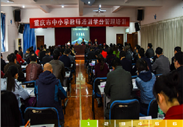

- 本章我们将讲解列表组。列表组件用于以列表形式呈现复杂的和自定义的内容。创建一个基本的列表组的步骤如下：
- 本章我们将讲解列表组。列表组件用于以列表形式呈现复杂的和自定义的内容。创建一个基本的列表组的步骤如下：
- 本章我们将讲解列表组。列表组件用于以列表形式呈现复杂的和自定义的内容。创建一个基本的列表组的步骤如下：
- 本章我们将讲解列表组。列表组件用于以列表形式呈现复杂的和自定义的内容。创建一个基本的列表组的步骤如下：
- 本章我们将讲解列表组。列表组件用于以列表形式呈现复杂的和自定义的内容。创建一个基本的列表组的步骤如下：
- 本章我们将讲解列表组。列表组件用于以列表形式呈现复杂的和自定义的内容。创建一个基本的列表组的步骤如下：
- 本章我们将讲解列表组。列表组件用于以列表形式呈现复杂的和自定义的内容。创建一个基本的列表组的步骤如下：
- 本章我们将讲解列表组。列表组件用于以列表形式呈现复杂的和自定义的内容。创建一个基本的列表组的步骤如下：

教育部关于印发《中小学德育工作指南》的通知教基〔2017〕8号
新疆生产建设兵团教育局
作者：喵星人浏览量：999
各省、自治区、直辖市教育厅（教委），新疆生产建设兵团教育局：
为全面贯彻党的十八大和十八届三中、四中、五中、六中全会精神，深入贯彻落实习近平总书记系列重要讲话精神，落实立德树人根本任务，不断增强中小学德育工作的时代性、科学性和实效性，经研究，我部制定了《中小学德育工作指南》。现印发给你们，请认真贯彻落实。 该《指南》是指导中小学德育工作的规范性文件，适用于所有普通中小学。各地要加强组织实施，将《指南》作为学校开展德育工作的基本遵循，纳入校长和教师培训的重要内容，并将其作为教育行政部门对中小学德育工作进行督导评价的重要依据，进一步提高中小学德育工作水平。 请将贯彻落实情况及时报我部。 教育部
2017年8月17日 中小学德育工作指南
为深入贯彻落实立德树人根本任务，加强对中小学德育工作的指导， 切实将党和国家关于中小学德育工作的要求落细落小落实，着力构建方向正确、内容完善、 学段衔接、载体丰富、常态开展的德育工作体系，大力促进德育工作专业化、规范化、 实效化，努力形成全员育人、全程育人、全方位育人的德育工作格局，特制定本指南。
一、指导思想全面贯彻党的十八大和十八届三中、四中、五中、六中全会精神，深入贯彻习近平总书记系列重要讲话精神和治国理政新理念新思想新战略，始终坚持育人为本、德育为先，大力培育和践行社会主义核心价值观，以培养学生良好思想品德和健全人格为根本，以促进学生形成良好行为习惯为重点，以落实《中小学生守则（2015年修订）》为抓手，坚持教育与生产劳动、社会实践相结合，坚持学校教育与家庭教育、社会教育相结合， 不断完善中小学德育工作长效机制，全面提高中小学德育工作水平，为中国特色社会主义事业培养合格建设者和可靠接班人。
二、基本原则（一）坚持正确方向。加强党对中小学校的领导，全面贯彻党的教育方针，坚持社会主义办学方向， 牢牢把握中小学思想政治和德育工作主导权，保证中小学校成为坚持党的领导的坚强阵地。
（二）坚持遵循规律。符合中小学生年龄特点、认知规律和教育规律，注重学段衔接和知行统一， 强化道德实践、情感培育和行为习惯养成，努力增强德育工作的吸引力、感染力和针对性、实效性。
（三）坚持协同配合。发挥学校主导作用，引导家庭、社会增强育人责任意识，提高对学生道德发展、 成长成人的重视程度和参与度，形成学校、家庭、社会协调一致的育人合力。
（四）坚持常态开展。推进德育工作制度化常态化，创新途径和载体，将中小学德育工作要求 贯穿融入到学校各项日常工作中，努力形成一以贯之、久久为功的德育工作长效机制。
资源附件
- 下载 预览 坚持常态开展。推进德育工作制度化常态化，创新途径和载体.ppt
- 下载 预览 坚持常态开展。推进德育工作制度化常态化，创新途径和载体.doc
- 下载 预览 坚持常态开展.xlsx
地址：重庆市南岸区学府大道9号
邮编：400067 电话：023-62658195、62658120 传真：023-86380492
 Copyright © 2013
重庆市教师网络研修平台 All Rights Reserved 渝ICP备05008072号-4
Copyright © 2013
重庆市教师网络研修平台 All Rights Reserved 渝ICP备05008072号-4
TOP